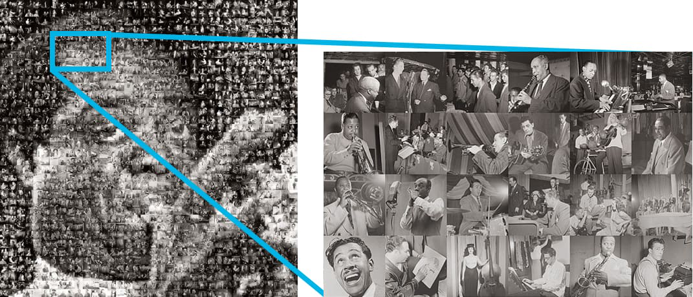
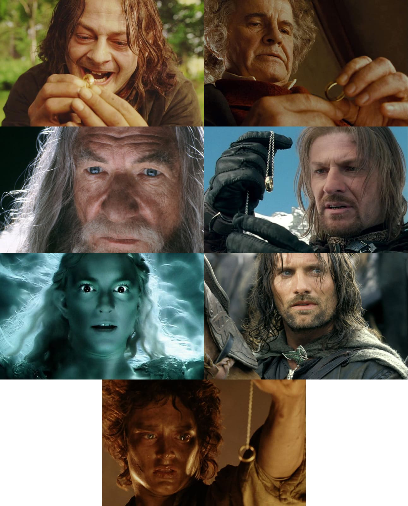
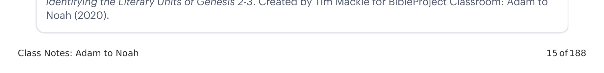

Lembre-se de nossa exploração anterior das origens da Bíblia Hebraica. É uma coleção de coleções que foi escrita, adaptada e editada em um todo unificado. Considere duas analogias adicionais que nos ajudarão a entender o significado desse fato para como lemos e interpretamos a literatura bíblica.Recall our earlier exploration of the origins of the Hebrew Bible. It's a collection of collections that has been written, adapted, and edited into a unified whole. Consider two additional analogies that will help us understand the significance of this fact for how we read and interpret biblical literature.

A unidade única do fotomosaico maior é alcançada precisamente por sua natureza composta. O arranjo temático de pequenos quadrados de luz/escuridão/cores torna-se uma ferramenta para criar padrões maiores de cor que fornecem uma imagem ordenada e unificada do sujeito. A Bíblia Hebraica exibe esse tipo de unidade de mosaico em grande e pequena escala.The unique unity of the larger photo mosaic is achieved precisely by its composite nature. The thematic arrangement of light/dark/great tiny squares becomes a tool to create larger patterns of color that provide an ordered, unified picture of the subject. The Hebrew Bible displays this kind of mosaic unity on a large and small scale.
Cineastas frequentemente criam uma unidade coesa para os temas e a linha de trama de uma história por meio de repetição e variação. Ao construir expectativas no espectador através da repetição, o artista pode introduzir variação e surpresa.Movie directors often create a cohesive unity to the themes and plot line of a story by repetition and variation. By building up viewer expectations through repetition, the artist can introduce variation and surprise.
Um exemplo disso é o motivo da cena da tentação do anel em O Senhor dos Anéis. Alguns personagens são tentados pelo poder do anel, e sucumbem a ele (Sméagol, Boromir, Frodo). Outros personagens resistem ao seu poder, mas de maneiras diferentes (Bilbo, por pouco, Gandalf e Galadriel, com temor e tremor, e Aragorn, como se não fosse problema!). Esse conjunto diversificado de respostas ao poder do anel cria uma rica paleta de personagens e um retrato complexo do poder na história.One example of this is the motif of the ring temptation scene in The Lord of the Rings. Some characters are tempted by the ring's power, and they succumb to it (Smeagol, Boromir, Frodo). Other characters resist its power but in different ways (Bilbo, barely, Gandalf and Galadriel, through fear and trembling, and Aragorn, like it's no problem!). This diverse set of responses to the ring's power creates a rich palette of characters and a complex portrait of power in the story.

Os autores bíblicos eram mestres dessa técnica. Na verdade, esse princípio básico de repetição e analogia padronizadas é a ferramenta mais fundamental em seu repertório. E é realizado pelos meios mais simples: a repetição estratégica de palavras-chave.The biblical authors were masters of this technique. In fact, this basic principle of patterned repetition and analogy is the most fundamental tool in their repertoire. And it's accomplished through the simplest of means: strategic repetition of key words.
Essas duas analogias ilustram diferentes características da coleção do TaNaK que criam a necessidade de duas estratégias de leitura relacionadas.These two analogies illustrate different features of the TaNaK collection that create the need for two related reading strategies.
Quando todos os princípios acima são aplicados a uma análise literária, isso produz o seguinte esboço da narrativa do Éden.When all the above principles are applied to a literary analysis, it yields the following outline of the Eden narrative.
| VersosVerses | UnidadeUnit | PartePart | MovimentoMovement |
|---|---|---|---|
| 2:4-6 | 2:4-17 Do Deserto ao Éden2:4-17 From Wasteland to Eden | Sem jardim, humanos ou chuvaNo garden, humans, or rain | 2:4-25 Do Isolamento no Deserto à Comunhão no Éden2:4-25 From Isolated Wasteland to Communion in Eden |
| 2:7-9 | Deus planta um jardim e forma o humanoGod plants a garden and forms human | ||
| 2:10-14 | O rio do Éden flui para se tornar quatro riosThe Eden river flows to become four rivers | ||
| 2:15-17 | Humano colocado no jardim + comando divinoHuman put in the garden + divine command | ||
| 2:18-20 | Problema: um humano sozinhoProblem: a human alone | ||
| 2:21-23 | Solução: dois humanos a partir de umSolution: two humans out of one | ||
| 2:24-25 | 2:4-3:24 A Narrativa do Éden: Do Jardim ao Exílio2:4-3:24 The Eden Narrative: From Garden to Exile | Dois humanos casadosTwo humans married | |
| 3:1-5 | 3:1-13 Loucura e a Queda3:1-13 Folly and the Fall | Diálogo entre a serpente e a mulherDialogue between snake and woman | |
| 3:6-7 | A mulher e o homem comem da árvoreWoman and man eat from the tree | ||
| 3:8-13 | Diálogo entre Deus e os humanosDialogue between God and humans | 3:14-24 O Resultado e o Exílio do Éden3:14-24 The Fallout and Exile from Eden | |
| 3:14-15 | Maldição sobre a serpenteCurse on the snake | ||
| 3:16 | Consequências para a mulherConsequences for the woman | ||
| 3:17-19 | Consequências para o homemConsequences for the man | ||
| 3:20-21 | Provisão de vestesProvision of garments | ||
| 3:22-24 | 3:14-24 O Resultado3:14-24 The Fallout | Humanos exilados do ÉdenHumans exiled from Eden |

Tim usa duas analogias para nos mostrar algumas habilidades importantes de estudo bíblico. No que o fotomosaico pode nos ajudar a prestar atenção? E as tentações do anel em O Senhor dos Anéis?Tim uses two analogies to show us some important Bible study skills. What can the photo mosaic help us pay attention to? What about the ring temptations from The Lord of the Rings?